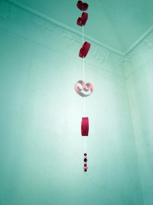

Hemos hecho una guirlanda de corazones para el día de San Valentín.
Para conseguir que el papel se curve tienes que enrollar el papel alrededor de una barrita o lápiz
Hearts garland to Valentin.
To get the curves you have to turn the paper around a pen.
Herz -Girlande zum Valentin.
Um die Drehungen zu schaffen, musst Du das Papier um einen Stift drehen.
Seen at howaboutorange